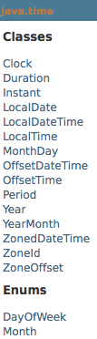

O presente e futuro da plataforma
“Throughout its history, Java has been essentially defined by its type system. It is central to the language and has maintained a strict adherence to nominative typing. From a practical point of view, the Java type system did not change much between Java 5 and Java 7.”
“ this small subset of the power of functional languages may well be all that most developers actually need for their day-to-day development ”
http://www.infoq.com/articles/How-Functional-is-Java-8
Date? Calendar?
JodaTime
JSR - 310

Instant inicio = Instant.now();//2014-05-27T12:41:47.670Z
/*doSomething*/
Instant fim = Instant.now();//2014-05-27T12:41:47.788Z
Duration.between(inicio, fim).toMillis();//118
LocalDate.now();//2014-05-27
LocalDateTime.now();//2014-05-27T09:41:47.887
LocalTime.now();//09:41:47.888
DateTimeFormatter.ofPattern("dd/MM/yyyy").format(LocalDate.now());
/*27-05-2014*/
DateTimeFormatter.ofLocalizedDate(FormatStyle.MEDIUM)
.withLocale(new Locale("pt", "br")).format(LocalDate.now()
/*27/05/2014*/
LocalDate.of(2014, 1, 30); // 1 = janeiro
new GregorianCalendar(2014, 1, 30).getTime();
/*Sun Mar 02 00:00:00 BRT 2014*/
LocalDate copaDe70 = LocalDate.of(1970, Month.JUNE, 21);
LocalDate copaDe94 = LocalDate.of(1994, Month.JULY, 17);
Period period = Period.between(copaDe70, copaDe94);
period.getYears();
period.getMonths();
period.getDays();
/*8 anos 0 meses e 26 dias */
Devo ou não retornar null?
-“Null Objects Design Patterns”
//Bloch
public List returnCollection() {
//remainder omitted
if (/*some condition*/) {
//return null;
return Collections.emptyList();//use instead
} else {
// return collection
}
}
//Martin - NullObjects
public User getUser() {
if (/*some condition*/) {
return user;
} else {
//return null;
return NullUser.getInstance(); //use instead
}
}
if (obj.getUser() != null && obj.getUser().isAuthenticated() {
}
public class NullUser extends User {
public static final NullUser INSTANCE = new NullUser();
public static NullUser getInstance() {
return INSTANCE;
}
@Override
public boolean isAuthenticated() {
return false;
}
private NullUser() {
}
}
if (obj.getUser().isAuthenticated() {
//allow
}
public Optional<User> getUser() {
if (/*some condition*/) {
return Optional.of(user);
} else {
return Optional.empty();
}
}
Optional<T> min(Comparator<? super T> comparator);
Optional<T> max(Comparator<? super T> comparator);
Optional<T> reduce(BinaryOperator<T> accumulator);
Collections.sort(lutadores,
Collections.reverseOrder(new Comparator<Lutador>() {
@Override
public int compare(Lutador o1, Lutador o2) {
return o1.getNome().compareTo(o2.getNome());
}
}));
Herança Múltipla?
“Default methods provide a more object-oriented way to add concrete behavior to an interface.” Brian Goetz.
“Default methods are inherited just like other methods; in most cases, the behavior is just as one would expect. However, when a class's or interface's supertypes provide multiple methods with the same signature, the inheritance rules attempt to resolve the conflict.” Brian Goetz.
interface Collection{
default void removeAll() {
System.out.println("Collection");
}
}
interface List extends Collection{
default void removeAll() {
System.out.println("List");
}
}
interface Queue extends Collection{
}
class Teste implements Queue, List{
new Teste().removeAll();
}
/**Irá imprimir "List"**/
interface Collection{
default void removeAll() {
System.out.println("Collection");
}
}
interface List extends Collection{
default void removeAll() {
System.out.println("List");
}
}
interface Queue extends Collection{
default void removeAll() {
System.out.println("Queue");
}
}
new Teste().removeAll();
/**Irá dá erro de compilação!! Conflito**/
class Teste implements Queue, List{
@Override
public void removeAll() {
List.super.removeAll();
//Queue.super.removeAll();
}
new Teste().removeAll();
}